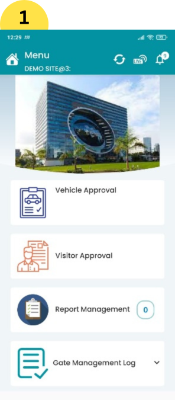

OWNER APP :-
1. Owner can opt for android or ios version of Owner app (link for owner app would be provided
in SMS and E-MAIL
received on registration).
2. On owner app “OTP” based login and “FORGOT PASSWORD” option is provided to safeguard it from
external
security threats.
3. On owner app additional functions such as “MY PROFILE”, “MUTE NOTIFICATION”, “UN-MUTE
NOTIFICATION” &
“LOGOUT” are provided on top-right of SITE LIST PAGE.
4. List of features and tabs provided on Owner App are mentioned below in detail:-
a. SITE LIST :-
1. On this page all registered sites of owner are available on a single page same as showcased
on web-panel.
2. Every individual site is presented with “site image”, “site name”, “site address” and “view
site button”.
3. Additonal to this every listed site is also presented with shorcuts for “REPORT MANAGEMENT
TAB”, “SOS”,
“VEHICLE APPROVAL TAB”, “VISITOR APPROVAL TAB” & “LIVE STRENGTH TAB”.This shortcuts are
accompanied with pop-up
counts which gets highlighted when any new action is received regarding to that particular
tab.(vehicle &
visitor approval tabs are subject to only, if assigned).
4. Manual “refresh” button and scroll down refresh us also included on site list page.
b. MENU :-
1. On menu page, top bar Is included with “site name”, “refresh button”, “live strength tab” and
“notifictaion
list”.
2. “Site image” is also diplayed on this page which adds to more personalized view.
3. Menu page includes tabs such as “Report management tab” and “Gate management logs” by-default
to every Owner
and Admin app. This tabs are explained below in detail
REPORT MANAGEMENT TAB:- This tab is divided into two sections “Upload Report” and “View Report”.
I. UPLOAD REPORT:- This function includes three fields “select name”, “choose file”, and
“remark”. User can
select single or multiple individuals from select name which includes all registered admin and
employees on site
with their respective departments in drop-down. In choose file field user can select any type of
file format to
be sent as report, example: - Image, pdf, jpg, word & camera.In remark filed (maximum 150
characters) are
allowed.
II. VIEW REPORT:- This tab includes “Sent” and “Received” sections.
All reports sent or received are arranged in this tab. It also includes filters such as “select
name” and
“calendar” to access previous data of reports sent and received. In view report user also can
download all
filtered data in pdf and excel format by just selecting desired format option provided.
GATE MANAGEMENT LOGS:- This tab includes “vehicle” and “visitor” logs created by every day recorded moments from approval tabs. owner and admin will receive this tab by-default on their respective app and web-panel. owner and admin also have authority to edit existing vehicle log. example: - challans, invoice images…… etc. (Only can add vacant fields where users name and time will be reflected on edit. usercannot edit existing occupied fields in log).
a) VEHICLE LOG--- This vehicle log is created by all the vehicle movements recorded from “GATE APP” on daily basis. Once any vehicle is entered on site via gate app then that vehicle starts to reflect in vehicle log. This vehicle is displayed in the form of log in table where columns such as “unique id”, “vehicle no.”, “view” & “status” are provided. For every new vehicle a “unique id” is allotted automatically for better sorting purpose. In “view” column all the details of
vehicle are arranged in drop-downs provided such as “Company Details”, “Vehicle Details”, “Document Details”, “Activity-Details”. All details related to that vehicle are provided for example: - “Activity Details” segment in a specific log list down “Entry Details” and “Exit Details” in brief recorded for that specific vehicle. In vehicle log “Calendar” and “search by vehicle, driver no. &otp” is also provided to access the desired filtered data with count
b) VISITOR LOG --- ThisVisitor log is created by all the visitor movements recorded from “GATE APP” on daily basis. Once any visitor is entered on site via gate app then that visitor starts to reflect in visitor log. This visitor data is displayed in the form of log in table where columns such as “unique id”, “visitor name”, “view” & “status” are provided. For every new visitor a “unique id” is allotted automatically for better sorting purpose. In “view” column all the details of vehicle are arranged in drop-downs provided such as “Company Details”, “Vehicle no. & docs”, “Visitor details”, “Activity-Details”. All details related to that vehicle are provided for example: - “Activity Details” segment in a specific log list down “Entry Details” and “Exit Details” in brief recorded for that specific visitor. In vehicle log “Calendar” and “Search by visitor mobile no.”&“otp” is also provided to access the desired filtered data with total no. of count indicated.
4. Other tabs such as “VEHCILE APPROVAL” and “VISITOR APPROVAL” can be displayed on menu page if they are assigned to Owner.
VEHICLE APPROVAL TAB – This tab in further divided into four sections which are explained in detail below.
